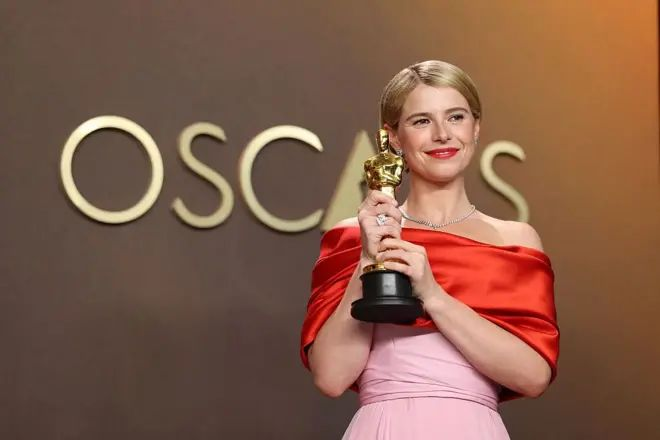
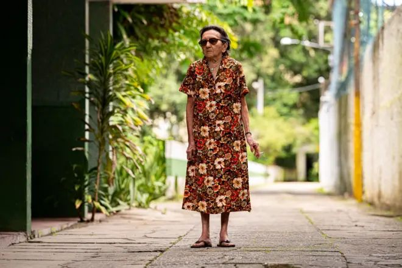
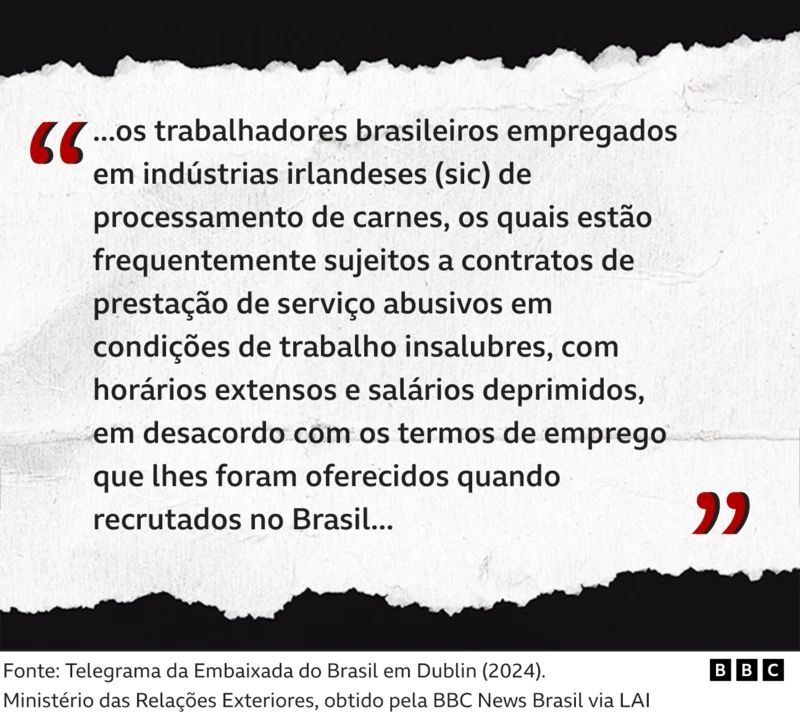

Cada vez mais brasileiros se mudam para a Irlanda para trabalhar em um mercado com mão de obra interna escassa: a indústria da carne, que abastece também outros países europeus.
More and more Brazilians are moving to Ireland to work in a market with scarce internal labor: the meat industry, which also supplies other European countries.
Esse movimento é acompanhado de uma preocupação crescente com abusos trabalhistas — um problema relatado não só por organizações que estudam o setor, mas evidente em comunicações internas do governo brasileiro.
This movement is accompanied by growing concern about labor abuses—a problem reported not only by organizations studying the sector but evident in internal communications from the Brazilian government.
A BBC News Brasil teve acesso a um conjunto de telegramas da Embaixada do Brasil em Dublin que revelam preocupação com migrantes brasileiros sujeitos a: "Condições de trabalho precárias", "insalubres" e "abusivas por parte dos empregadores"; "Desempenhar múltiplas funções no ambiente de trabalho, em condições de segurança precárias"; "Turnos de trabalho prolongados", às vezes com "salário inferior ao mínimo".
BBC News Brasil had access to a set of telegrams from the Brazilian Embassy in Dublin that reveal concerns about Brazilian migrants subject to: "Precarious," "unhealthy," and "abusive" working conditions; "Performing multiple functions in the workplace in precarious safety conditions"; "Prolonged work shifts," sometimes with "below-minimum wages."
Os relatos da embaixada apontam que "a maioria dos brasileiros nessa situação teme protestar" e, como consequência, serem "obrigados, junto com seus familiares, a voltar imediatamente para o Brasil".
Embassy reports point out that "most Brazilians in this situation fear protesting" and, as a consequence, being "forced, along with their families, to return immediately to Brazil."

"a arma disparou na minha mão"
"the gun fired in my hand"
Poucas semanas após mudar para a Irlanda para trabalhar em um frigorífico, o tocantinense Guilherme dos Santos, hoje com 34 anos, sofreu em 2021 um acidente que levou à amputação de um dedo.
A few weeks after moving to Ireland to work in a slaughterhouse, Guilherme dos Santos from Tocantins, now 34, suffered an accident in 2021 that led to the amputation of a finger.
"Sofri um acidente, com dois ou três meses de serviço. Fui atirar para matar um animal, ele mexeu com a cabeça, e a arma disparou na minha mão. Atingiu o tendão na palma da mão e tive que passar por três cirurgias. Duas foram para tentar reconstituir, mas tive que amputar um dedo", contou à BBC News Brasil.
"I had an accident, two or three months into the job. I was shooting to kill an animal, it moved its head, and the gun fired in my hand. It hit the tendon in my palm and I had to have three surgeries. Two were attempts to repair it, but I had to amputate a finger," he told BBC News Brasil.
Santos conta que perdeu a força na mão — além do mindinho lesionado, também teve fratura no anelar. Ele diz que inicialmente teve apoio da empresa com os tratamentos. Depois, decidiu colocar o caso na Justiça — ele conta que não tinha o treinamento para trabalhar com a arma usada no processo de sangria do animal.
Santos says he lost strength in his hand—besides the injured pinky, he also fractured his ring finger. He says he initially received company support for treatment. Later, he decided to take the case to court—he says he didn't have training to work with the weapon used in the animal bleeding process.

"aprende ou te mando de volta pro Brasil"
"learn or i'll send you back to Brazil"
Os profissionais brasileiros contratados por empresas na Irlanda já possuem experiência prévia como desossadores, cortadores, operadores de linha, limpadores, dentre outras funções. Uma das etapas de seleção, inclusive, envolve a gravação de um vídeo do profissional no processo de desossar um animal abatido.
Brazilian professionals hired by companies in Ireland already have prior experience as boners, cutters, line operators, cleaners, among other functions. One of the selection steps even involves recording a video of the professional in the process of deboning a slaughtered animal.
No entanto, um primeiro "tombo", segundo os relatos ouvidos pela reportagem, acontece quando alguns deles descobrem que o visto de trabalho recebido não é o equivalente a um cargo com essa experiência, para que possam pagar menos, ou quando, na prática, acabam trabalhando em um posto no qual não têm treinamento.
However, a first "setback," according to reports, happens when some of them discover that the work visa they received is not equivalent to a position with that experience, so they can be paid less, or when, in practice, they end up working in a position for which they have no training.
Lucas dos Anjos, de 27 anos, se mudou para Irlanda em 2020, após ser selecionado por uma entrevistadora no Brasil. A empresa pagou passagem e hospedagem, além de suporte inicial, como acomodação, e um adiantamento de 100 euros.
Lucas dos Anjos, 27, moved to Ireland in 2020 after being selected by an interviewer in Brazil. The company paid for passage and accommodation, plus initial support, including housing and a 100-euro advance.
Inicialmente destinado à desossa, Lucas acabou trabalhando no abate. "Logo na recepção, o pessoal já falava da fama dos supervisores de serem tiranos, mal-educados." Ele chegou em um grupo com 20 pessoas e que elas tinham de aprender pelo menos três funções diferentes. "Se a pessoa nunca trabalhou no abate, por exemplo, é difícil de aprender. E então o supervisor dizia: ou você aprende, ou te mando de volta para o Brasil."
Initially assigned to boning, Lucas ended up working in slaughter. "Right at reception, people were already talking about supervisors having a reputation for being tyrants, rude." He arrived in a group of 20 people who had to learn at least three different functions. "If a person never worked in slaughter, for example, it's hard to learn. And then the supervisor would say: either you learn or I'll send you back to Brazil."
Depois de desentendimentos e muita frustração, Lucas conta que deixou a empresa após um ano. Conseguiu outro trabalho em um frigorífico menor, que depois descobriu que era conhecido por colegas brasileiros como "pela jegue" por suas condições ainda mais degradantes.
After disagreements and much frustration, Lucas says he left the company after a year. He got another job at a smaller slaughterhouse, which he later discovered was known by Brazilian colleagues as "pela jegue" for its even more degrading conditions.

"favoritos" do mercado
"favorites" of the market
Brasileiros são considerados favoritos nesse setor, segundo recrutadores e especialistas em imigração ouvidos pela reportagem, por uma série de fatores: trabalham muito, têm experiência prévia em frigoríficos no Brasil e, como outros imigrantes que dependem do visto de trabalho, têm receio de demonstrar insatisfação e perder oportunidades.
Brazilians are considered favorites in this sector, according to recruiters and immigration experts interviewed for this report, for a series of reasons: they work hard, have prior experience in slaughterhouses in Brazil, and, like other immigrants who depend on work visas, fear expressing dissatisfaction and losing opportunities.
O número de permissões de trabalho a brasileiros em diversas áreas do mercado de trabalho nunca foi tão alto quanto nos últimos 3 anos, segundo dados do governo irlandês. Só em 2024, foram 4,5 mil novas autorizações. Há dez anos, esse número não chegava a 1 mil por ano.
The number of work permits for Brazilians in various areas of the job market has never been as high as in the last 3 years, according to Irish government data. In 2024 alone, there were 4,500 new authorizations. Ten years ago, this number didn't reach 1,000 per year.
Ao olhar especificamente para o mercado do processamento da carne, de 8 mil autorizações de trabalho emitidas desde 2020 pelo governo irlandês para pessoas de fora da União Europeia e do Espaço Econômico Europeu (EEA), 66% foram para brasileiros.
Looking specifically at the meat processing market, of 8,000 work authorizations issued since 2020 by the Irish government for people from outside the European Union and European Economic Area (EEA), 66% went to Brazilians.
O Itamaraty estima que há 80 mil brasileiros na Irlanda, e diz que o número é uma avaliação aproximada, que inclui todos os brasileiros residentes, ainda que temporariamente, e independentemente da situação migratória.
The Brazilian Foreign Ministry estimates there are 80,000 Brazilians in Ireland, and says the number is an approximate assessment that includes all Brazilians residing there, even temporarily, regardless of migration status.

"medo de demissão"
"fear of dismissal"
O temor da demissão após reclamação por melhorias é uma das preocupações relatadas nos documentos da embaixada. Os telegramas mostram que a comunidade que trabalha em frigoríficos é vista pela diplomacia brasileira como "especialmente vulnerável" por uma combinação de fatores, que inclui falta de domínio do inglês, relativo isolamento no interior do país (onde estão as empresas) e "limitada capacidade de mobilizar-se em defesa dos seus interesses."
Fear of dismissal after complaining about improvements is one of the concerns reported in embassy documents. The telegrams show that the community working in slaughterhouses is seen by Brazilian diplomacy as "especially vulnerable" due to a combination of factors, including lack of English proficiency, relative isolation in the interior of the country (where the companies are located), and "limited capacity to mobilize in defense of their interests."
Em resposta, o governo irlandês lançou no fim de 2024 uma pesquisa com trabalhadores do setor, cujos resultados ainda não foram divulgados.
In response, the Irish government launched a survey of sector workers at the end of 2024, whose results have not yet been released.
"A pesquisa certamente terá sido motivada por uma série de incidentes envolvendo direitos trabalhistas na indústria da carne irlandesa nos últimos anos", disse a embaixada brasileira à reportagem, em nota. "A Embaixada vem atuando há muitos anos nesse tema, algumas vezes acompanhando negociações entre trabalhadores brasileiros e as empresas, em outras exigindo das autoridades irlandesas medidas contra casos abusivos."
"The survey was certainly motivated by a series of incidents involving labor rights in Ireland's meat industry in recent years," the Brazilian Embassy told the report in a statement. "The Embassy has been working on this issue for many years, sometimes accompanying negotiations between Brazilian workers and companies, other times demanding Irish authorities take action against abusive cases."

"xingam a gente dando risada"
"they curse at us and laugh"
Entre as reclamações de um brasileiro que se mudou em 2022 para a Irlanda para trabalhar em uma empresa tradicional do setor, está a falta de fiscalização. Ele diz que era mais rigorosa em seu emprego anterior, no Brasil. Ele — que pediu para não ser identificado, pois trabalha na mesma empresa e teme perder o visto — também reclama que não recebe pelas horas extras trabalhadas. "Ganham muito dinheiro em cima da gente."
Among the complaints of a Brazilian who moved to Ireland in 2022 to work in a traditional company in the sector is the lack of oversight. He says it was more rigorous in his previous job in Brazil. He—who asked not to be identified because he works for the same company and fears losing his visa—also complains that he isn't paid for overtime. "They make a lot of money off us."
Além de salário e jornada, ele também reclama das condições no local. "Não tem um bebedouro dentro da fábrica. A gente tem que sair, tirar o uniforme que usamos lá dentro, e ir em uma cantina. De vez em quando, a gente vai e o gerente começa a gritar com a gente, [reclamar] que estamos fazendo pausa."
Beyond wages and hours, he also complains about conditions on-site. "There's no water fountain inside the factory. We have to go out, remove the uniform we wear in there, and go to a canteen. Every once in a while, we go and the manager starts yelling at us, [complaining] that we're taking a break."
Ele também afirmou que escuta xingamentos, que muitos colegas sequer entendem por não falar inglês. "Não tem um tradutor na empresa. Quando cheguei, a empresa falou que pagaria um curso, mas nunca pagou. O que sei hoje foi aprendendo no dia a dia, com o chefe botando pressão. Às vezes, xingam a gente dando risada."
He also said he hears cursing, which many coworkers don't even understand because they don't speak English. "There's no translator at the company. When I arrived, the company said it would pay for a course, but it never did. What I know today I learned on the job, with the boss putting pressure on me. Sometimes they curse at us and laugh."

"ganho financeiro"
"financial gain"
O interesse de brasileiros em migrar para trabalhar na indústria da carne irlandesa fica evidente nas redes sociais, onde perfis e grupos dividem informações sobre processos seletivos, que chegam a ter centenas de candidatos por uma única vaga. No Youtube e no Instagram, há até venda de "métodos" para conseguir o trabalho, que exige experiência comprovada. Também há agências que prometem passagem, moradia e salários cinco vezes maiores do que é pago por um mesmo cargo no Brasil.
The interest of Brazilians in migrating to work in the Irish meat industry is evident on social media, where profiles and groups share information about selection processes that can have hundreds of candidates for a single position. On YouTube and Instagram, there's even sale of "methods" to get the job, which requires proven experience. There are also agencies that promise passage, housing, and salaries five times higher than what is paid for the same position in Brazil.
Micheline Oliveira é recrutadora para alguns dos maiores frigoríficos irlandeses desde 2018, após mais de dez anos atuando em empresas do mesmo setor no Brasil. A empresa para a qual ela trabalha oferece contrato inicial de dois anos, documentação e passagem aérea pagas pela empresa, e salário anual de 30 mil euros (cerca de R$ 16 mil por mês).
Micheline Oliveira has been a recruiter for some of Ireland's largest slaughterhouses since 2018, after more than ten years working for companies in the same sector in Brazil. The company she works for offers an initial two-year contract, documentation and airfare paid by the company, and an annual salary of 30,000 euros (about R$16,000 per month).
"ascensão social"
"social ascension"
Mestre em Antropologia Social e doutor em Ciências Sociais pela Unicamp, Igor Machado, que fez trabalho de pesquisa com brasileiros na Irlanda, relata que o trabalho em frigoríficos irlandeses representa uma "ascensão social" para muitos brasileiros que trabalharam no mesmo setor no Brasil.
A Master's in Social Anthropology and PhD in Social Sciences from Unicamp, Igor Machado, who conducted research with Brazilians in Ireland, reports that work in Irish slaughterhouses represents "social ascension" for many Brazilians who worked in the same sector in Brazil.
"A diferença salarial na Irlanda é menos intensa que no Brasil, é um país menos desigual. Mesmo com o salário mínimo, há mais acesso a determinadas políticas sociais. Isso faz com que a vida seja menos dura do que no Brasil", diz. Em relação ao dia a dia no trabalho, no entanto, Machado observa que "o trabalho em frigoríficos mói as pessoas".
"The salary difference in Ireland is less intense than in Brazil, it's a less unequal country. Even with minimum wage, there's more access to certain social policies. This makes life less hard than in Brazil," he says. Regarding daily work life, however, Machado observes that "work in slaughterhouses grinds people down."
"É um trabalho brutal. Se você ficar dois, três anos, inevitavelmente terá problemas físicos. É uma atividade repetitiva, violenta. Exige força. Os acidentes de trabalho são muito intensos", diz ele, que aponta que imigrantes que trabalham neste setor no Brasil, como haitianos, sofrem situações similares.
"It's brutal work. If you stay two, three years, you'll inevitably have physical problems. It's repetitive, violent work. It requires strength. Work accidents are very intense," he says, noting that immigrants working in this sector in Brazil, such as Haitians, suffer similar situations.